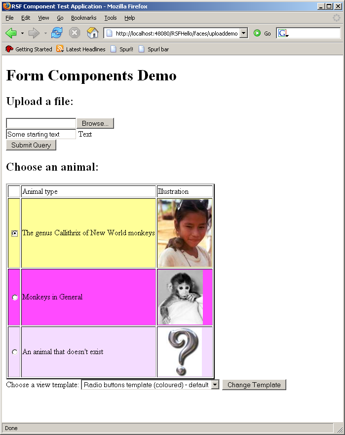
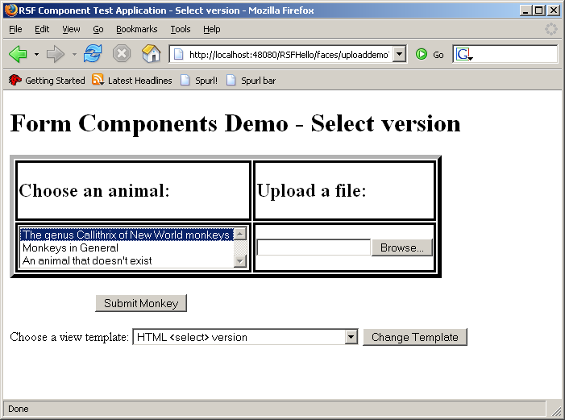

This is a very short app that tries to put as many RSF components and features through their paces in as short a space as possible. The current version demonstrates
- "Parachute rendering" of a selection control as either an HTML <select> control or else as a set of radio buttons within a table, depending on view template
- Dynamic selection of view templates.
- "One-step" flows for short-term persistence of action results
- Use of a "decorator" to portably add styling annotations to the component tree.
- Use of native HTTP GET forms.
You can see the current code for the main view producer for the ComponentTest app live in svn here: UploadDemoProducer.java
The app defines two view template for this view, called uploaddemo.html and uploaddemo-select.html that render this view in two very different ways. The first template renders the monkey selection control as a set of radio buttons in successive rows of a table, which also contain a textual and image representations of the animals. The second template does away with the table and images, and renders the choices using a HTML <select>. You can see examples of these two views below, and even play with the app online at http://ponder.org.uk/RSFComponentTest/faces/uploaddemo!


It's worth pointing out that doing this kind of thing with other frameworks can be truly awful - usually such differences in rendering behaviour can't be accommodated without creating either custom renderers, or even in many cases custom components! For example the trials awaiting anyone who tries to render radio buttons as part of table rows in JSF are summarised in this somewhat demoralising IBM Developerworks Article.
Another architecturally impossible feature in JSF is the use of the HTTP GET form which allows selection of the view templates. This naturally requires no change in server state, only URL state, so it is correct that it be implemented using HTTP GETs. In RSF, this is just a matter of providing the UIForm object with the required ViewParameters address, and leaving it to get on with it.
The "one-step" flow is designed to allow a "light" means of persisting the results of the action cycle just long enough to render the summary page on UploadDemoResults. In a "sleazy" usage this would be done through providing rendered results from an HTTP POST, which RSF does not permit. RSF "informal flows" are described more fully on their own page - they are actually just a slight extension of the JSF NavigationCase system.
The final interesting point to the demo is the method for dynamically selecting the view template based on a chosen piece of URL state. In RSF this is achieved by overriding the framework's definition of the templateResolverStrategy in the Spring configuration - this unparalleled level of easy configurability could only come from a framework completely built on IoC and IoC concepts, rather than merely providing "integration" with it just for use by clients.
Add new attachment
List of attachments
| Kind | Attachment Name | Size | Version | Date Modified | Author | Change note |
|---|---|---|---|---|---|---|
png |
test-components-list.png | 82.5 kB | 1 | 19-Jul-2006 09:36 | AntranigBasman | |
png |
test-components-select.png | 25.5 kB | 1 | 19-Jul-2006 09:36 | AntranigBasman |
{kind=link}
{kind=link}
{kind=link}
{kind=link}
Documentation
Developers
Javadocs
Designers
Sample RSF Apps
Presentations
Acronyms
Downloads
Current Release
Trunk
Distributions
Old Versions
Community
Q&A
Forums
Mailing Lists
Issue Tracker
People
Design
Roadmap
Integrations
Concepts
Philosophy